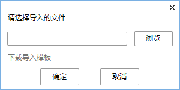
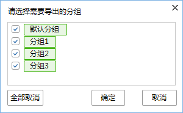

介绍新建联系人、导入/导出本地通讯录和新建分组等。
本地通讯录是指显示存储在本地设备上的联系人信息。您可以对本地通讯录进行新建联系人、导入/导出本地通讯录和新建分组等操作，也可以将企业通讯录中的联系人添加到本地通讯录中。
新建联系人
新建联系人可以将联系人添加到通讯录列表，方便查找和管理。
- 从TE Desktop主界面进入新建联系人界面。您可以从以下几种方式选择一种进入，新建联系人界面如图1所示。
- 单击，选择“新建联系人”。
- 单击，在通讯录列表界面空白处右击选择“新建联系人”或右击联系人条目选择“新建联系人”。
- 单击，在“最近通话”中右击陌生人号码选择“新建联系人”或“添加到地址本”。
- 单击，在通话记录界面右击记录选择“添加到地址本”。
- 输入联系人信息，联系人信息说明请参见表1。
表1 联系人信息 参数
如何理解
如何设置
姓名
用于标识联系人，显示在本地通讯录列表。
由文字、字母或数字组成，长度不超过100个字符。
不能和已经存在的联系人姓名相同。
号码
在SC服务器注册的帐号，即登录TE Desktop所使用的帐号，用于发起呼叫。该号码由SC服务器管理员下发。
号码长度不超过100个字符。
所属组
联系人所属分组名称。
新建联系人缺省属于“默认分组”，也可以从下拉列表中选择其他已存在的分组。
移动电话
联系人的移动电话。
根据实际情况输入。
办公电话
联系人的办公电话。
根据实际情况输入。
电子邮箱
联系人的电子邮箱地址。
按照正确电子邮箱格式，根据实际情况输入。长度不超过100个字符。
地址
联系人的地址信息。
长度不超过100个字符。
- 单击“确定”。
搜索联系人
在“通讯录”界面单击上方的，输入姓名、姓名全拼、姓名拼音缩写或号码，可匹配出符合查询条件的联系人。
单击 可清除输入。
可清除输入。
您可以在通讯录中查看联系人的在线状态：
- ：联系人在线。
- ：联系人忙碌。
- ：联系人离线。
导入/导出本地通讯录
将编辑后的联系人条目导入TE Desktop内，这些联系人条目会显示在本地通讯录列表中。TE Desktop的联系人也可以导出到PC上，以便批量编辑。
导出的联系人记录以*.xlsx，*.xls和*.csv格式保存。
- 在TE Desktop主界面单击选择“导入本地地址本”或在本地通讯录列表界面右击选择“导入本地地址本”。图2 导入本地通讯录

单击“下载导入模板”可将模板保存到本地，您可以在模板中编辑联系人信息并导入到通讯录列表中。
- 在本地通讯录列表界面右击选择“导出本地地址本”。图3 导出本地通讯录

编辑/删除联系人
添加为联系人后您可以搜索联系人、查看联系人详情、编辑联系人信息和删除联系人。
- 在本地通讯录列表界面右击联系人选择“编辑联系人”，打开“联系人详情”界面，可编辑联系人。
- 在本地通讯录列表界面右击联系人选择“查看联系人详情”，打开“联系人详情”界面，可编辑联系人或者删除联系人。
- 在本地通讯录列表界面右击联系人选择“删除联系人”，确认后可删除联系人。
新建/删除分组
新建分组将显示在通讯录列表，您可以将同属某一类型的联系人添加到相同分组，便于您管理联系人。
您可以通过以下两种方式新建分组：
- 在TE Desktop主界面单击，选择“新建分组”。
- 在本地通讯录列表界面空白处右击选择“新建分组”或右击分组名选择“新建分组”。
新建分组后您可以右击分组名重命名分组或删除分组。“最近通话”和“默认分组”不能被重命名或删除。
设置昵称
设置联系人显示在通讯录列表的昵称。
在通讯录列表界面右击联系人选择“设置昵称”，输入昵称后单击“完成”。